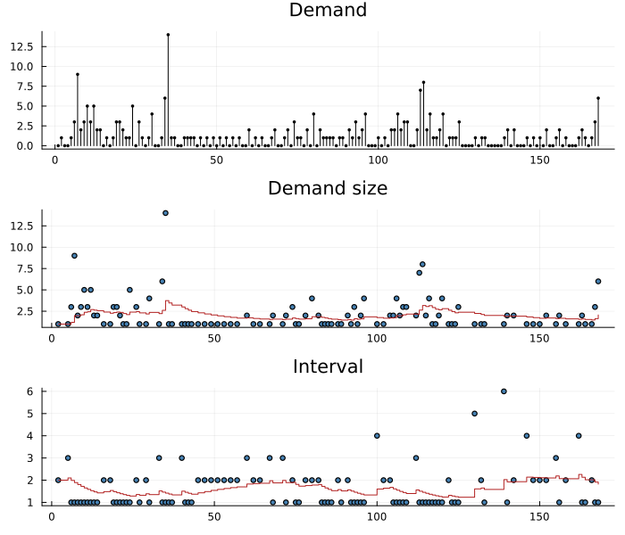
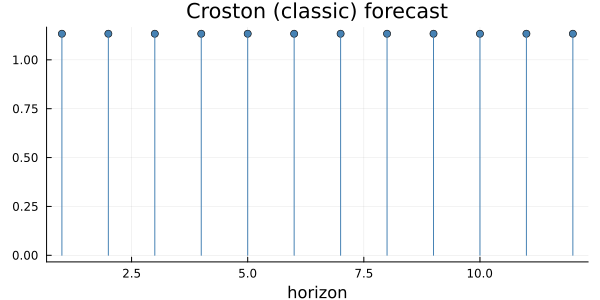
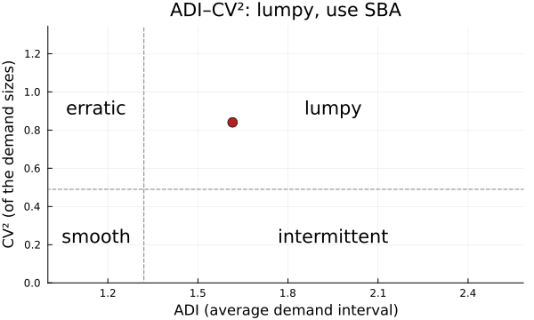
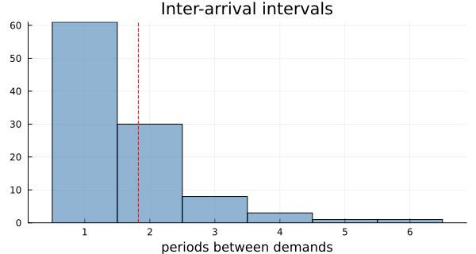
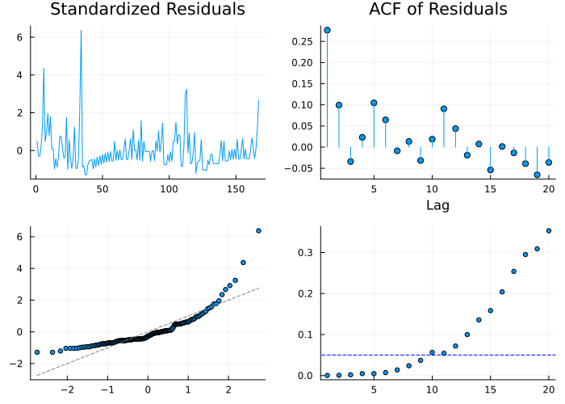

Series That Are Mostly Zero
Spare parts, slow-moving retail lines, rare events: series where most periods record nothing and the rest record a handful. Ordinary methods handle them badly. Exponential smoothing drops towards zero after every empty period and jumps after every demand, and a mean of mostly zeros says nothing about how large a demand is when it comes. Intermittent-demand methods model the two things separately: the size of a demand, and the time between demands.
None of the six textbooks this project checks against covers the topic. Not Hamilton, Montgomery, Tsay, Shumway & Stoffer, Cowpertwait, or the fpp lecture notes, although the published Forecasting: Principles and Practice (Hyndman & Athanasopoulos) does. The methods here come from their papers: Croston (1972), Syntetos & Boylan (2005), Teunter, Syntetos & Babai (2011), Nikolopoulos et al. (2011) and Petropoulos & Kourentzes (2015). Their numbers are checked against the two reference implementations, R's forecast::croston and Python's statsforecast, and every point forecast here agrees with statsforecast exactly.
The decomposition
The series used throughout is monthly US poliomyelitis cases, 1970–1983 (dataset("polio"), from astsa): 168 months, 64 of them with no cases.
using TSAnalytics, Plots, Statistics
y = dataset("polio").value
d = demand_intervals(y)
println(length(y), " months, ", length(d.demands), " with cases; mean interval ",
round(mean(d.intervals), digits = 4), ", mean size ", round(mean(d.demands), digits = 4))168 months, 104 with cases; mean interval 1.6154, mean size 2.1538demand_intervals splits the series into the two sequences Croston smooths: the demand sizes (the non-zero values) and the intervals between them, the first counted from the start.
m = croston(y)
plot(demand_intervals(m); size = (700, 600))
The top panel is drawn as stems: a spike at each month with cases and nothing between. A line through the zeros, which is what R's autoplot draws for a Croston fit, would show fractional cases in months that had none. The lower panels show each sequence with the level Croston's method keeps for it, updated only when a demand arrives.
Croston's method and its corrections
Croston smooths the sizes and the intervals by simple exponential smoothing, each started at its first value, and divides:
\[\hat y = \frac{\hat z}{\hat p}, \qquad \hat z \leftarrow \alpha z_k + (1-\alpha)\hat z, \quad \hat p \leftarrow \alpha p_k + (1-\alpha)\hat p\]
where z_k is the kth demand and p_k the interval before it. The forecast is a flat rate per period: on average, this much per month.
println("demand level ", round(m.demand_level, digits = 6), " / interval level ",
round(m.interval_level, digits = 6), " = ", round(m.forecast, digits = 6), " per month")demand level 2.067005 / interval level 1.823374 = 1.133616 per monthThe ratio is biased upward (Syntetos & Boylan 2005), and SBA multiplies by 1 − α/2 to remove it. TSB (Teunter, Syntetos & Babai
- smooths the probability of a demand in every period instead of the
interval, so its forecast decays during a long run of zeros rather than waiting for the next demand, which suits items going obsolete. ADIDA sums the series into buckets as wide as the mean interval, forecasts the sums, and divides back; IMAPA averages ADIDA over every bucket width up to that one.
models = [croston(y), croston(y; method = :sba), croston(y; method = :optimized),
tsb(y; alpha_d = 0.1, alpha_p = 0.1), adida(y), imapa(y)]
for f in models
println(rpad(string(f.method), 10), round(f.forecast, digits = 4))
endclassic 1.1336
sba 1.0769
optimized 1.3061
tsb 1.2919
adida 1.5329
imapa 1.8217Six methods, forecasts from about 1.08 to 1.82 cases a month. :optimized chooses each alpha by golden-section search, but only within [0.1, 0.3] as statsforecast does, so it is a restricted search.
plot(forecast(m, 12); size = (600, 300))
The forecast is drawn as stems too. It is a rate, not a path. None of these methods has prediction intervals: no reference implementation computes any, and IntermittentForecast has no fields for them.
Which method: the ADI/CV² classification
Syntetos, Boylan & Croston (2005) proposed choosing by two numbers: the average demand interval (ADI) and the squared coefficient of variation of the sizes (CV²). Above either cutoff, 1.32 and 0.49, SBA is the better choice; otherwise Croston.
c = adi_cv2(y)ADI = 1.61538, CV² = 0.840351 -> lumpy, use SBA (cutoffs 1.32, 0.49)plot(c; size = (600, 360))
Polio is lumpy: demands are irregular and their sizes vary widely. The four quadrant names are the paper's categories. The one implementation of the rule, R's tsintermittent::idclass, decides only SBA versus Croston, and neither forecast nor statsforecast classifies at all.
plot(demand_intervals(m); histogram = true, size = (600, 320))
The intervals' distribution, with Croston's final interval level marked. Most gaps are one month, and the tail is what makes the series intermittent.
Judging the forecasts
Accuracy measures need care when most actual values are zero. MAPE is undefined. Squared-error measures are dominated by the few large months. The measures used for intermittent series scale by the training data:
train, test = y[1:144], y[145:end]
for (name, f) in (("Croston", croston(train)), ("SBA", croston(train; method = :sba)),
("TSB", tsb(train; alpha_d = 0.1, alpha_p = 0.1)), ("IMAPA", imapa(train)))
p = forecast(f, 24).point
println(rpad(name, 8), "MASE ", round(mase(test, p, train), digits = 3),
" sPIS ", round(spis(test, p, train), digits = 2),
" CFE ", round(cfe(test, p), digits = 2))
endCroston MASE 0.579 sPIS 15.05 CFE -0.93
SBA MASE 0.582 sPIS 15.12 CFE 0.27
TSB MASE 0.592 sPIS 15.37 CFE 4.41
IMAPA MASE 0.602 sPIS 15.62 CFE 8.68mase scales absolute error by the in-sample naive error. spis (scaled periods-in-stock) and cfe (cumulative forecast error, actual minus forecast) measure bias over time. That matters for stock: a positive CFE means demand ran ahead of the forecast, so shelves would have emptied. Over 1982–83 there were 0.96 cases a month. Croston forecast about 1.0 and ends almost exactly even. IMAPA forecast 0.60 and falls 8.7 cases short. On lumpy data the methods disagree by more than their accuracy measures do: the MASE values are within 0.03 of each other.
Residuals
diagnostic_plot on a fitted model checks the one-step errors from the second period on:
plot(diagnostic_plot(m); size = (700, 500))
Read the normal Q–Q panel with care. Errors of a count series that is mostly zero are not Gaussian, and are not meant to be.
An Indian example?
Parts of this manual end on Indian data. This chapter does not: no intermittent Indian series is available to the package, and aggregate indicators like the IIP are not intermittent. Polio is real data. The simulated series in the API reference (rpois(60, 0.4) in R with seed 7) is labelled as simulated.
Summary
| function | what it does | reference agreement |
|---|---|---|
croston | :classic, :sba, :optimized | statsforecast exactly; forecast::croston to 17 digits |
tsb | probability × size | statsforecast exactly |
adida, imapa | temporal aggregation | statsforecast exactly |
demand_intervals | sizes, intervals, levels | |
adi_cv2 | ADI/CV² classification | tsintermittent::idclass's rule |
mase, spis, cfe | accuracy and bias |
Where it differs from the references: SBA's factor follows alpha (statsforecast hardcodes 0.95). Negative values and a lone demand at the first period are refused, where both references return a forecast. See Coming from R or Python.